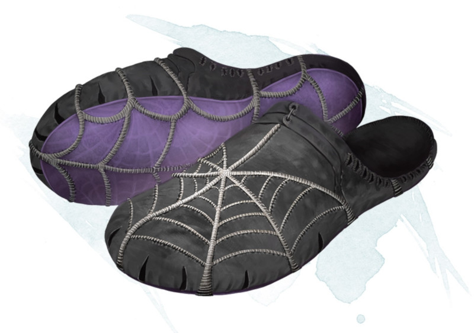

Chaussons de pattes d'araignée
[ Slippers of Spider Climbing ] [ Chaussons de l'araignée ]
Objet merveilleux, peu commun (nécessite un lien)
Lorsque vous portez ces chaussures légères, vous pouvez monter, descendre et parcourir des surfaces verticales ou la tête à l'envers aux plafonds, tout en ayant les mains libres. Votre vitesse d'escalade est égale à votre vitesse de marche. Cependant, les chaussons ne vous permettent pas de vous déplacer de cette façon sur une surface glissante, comme sur de la glace ou de l'huile.
Dungeon Master´s Guide (SRD)
